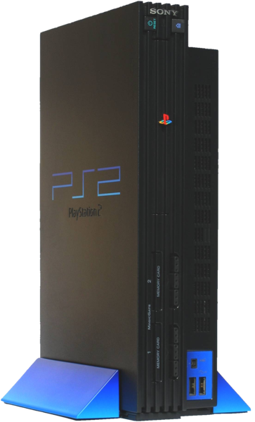

Sony Playstation 2, 2000
 CPU:
MIPS “Emotion Engine”
R5900, 64 bits
Freq: 294 MHz
GPU:
“Graphic Synthesizer”
Freq: 147 MHz
I/O:
MIPS R3000A
CPU do PS1
RAM: 32 MB
VRAM: 4MB
Som: 2MB
I/O: 2MB
Unidades: 140 milhões
Jogo mais vendido: Grand Theft Auto: San Andreas